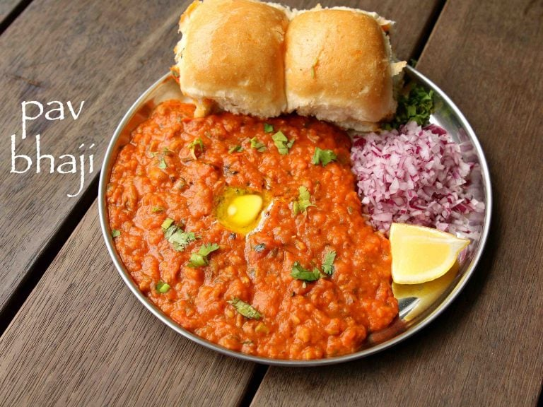

Pav Bhaji Recipe

Description
Pav-bhaji dish has a long history and it originated during the thriving textile industry business in Mumbai. The dish was particularly served as a fast food for the textile workers and thus served the required nutrients from the combination of vegetables.
Gradually due to the popularity of this recipe, it eventually turned out to be street food served on every corner of the street.
Ingredients
- 1 tbsp + 1 tbsp butter
- 3 to mato (finely chopped)
- ¼ cup peas / matar
- ½ capsicum (finely chopped)
- 2 potato (boiled & mashed)
- 1 tsp salt
- 1 tsp + ¼ tsp kashmiri red chilli powder / lal mirch powder
- ¼ tsp turmeric / haldi
- 1 tsp + ½ tsp pav bhaji masala
- 1 tsp + 1 tsp kasuri methi / dry fenugreek leaves
- 2 tbsp + 1 tbsp coriander leaves (finely chopped)
- 1 tsp ginger garlic paste
- 1 onion (finely chopped)
- ½ lemon juice
- 3 drops red food colour (optional)
- water to adjust consistency
to toast pav:
- 8 pav / bread roll
- 4 tsp butter
- ½ tsp kashmiri red chilli powder / lal mirch powder
- ½ tsp pav bhaji masala
- 4 tsp coriander leaves (finely chopped)
Steps
- Firstly, in a large kadai heat 1 tbsp butter and add vegetables. cook and mash well.
- Now add 1 tsp chilli powder, ¼ tsp turmeric, 1 tsp pav bhaji masala, 1 tsp kasuri methi and 2 tbsp coriander leaves.
- Heat a tbsp of butter and add ¼ tsp chilli powder, ½ tsp pav bhaji masala, 1 tsp kasuri methi.
- Also add 1 tbsp coriander leaves, 1 tsp ginger garlic paste, 1 onion and ½ lemon juice. saute well.
- Now add 3 drops of red food colour and mix well.
- Boil and mash for 5 minutes adjusting consistency.
- Finally, serve pav and bhaji as pav bhaji.